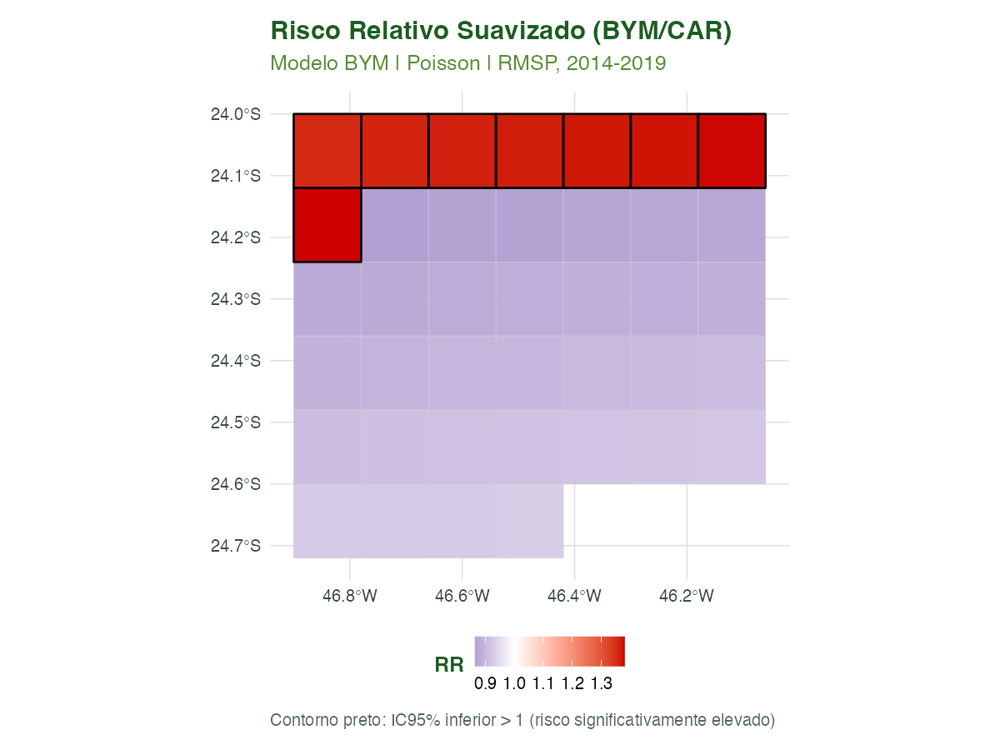
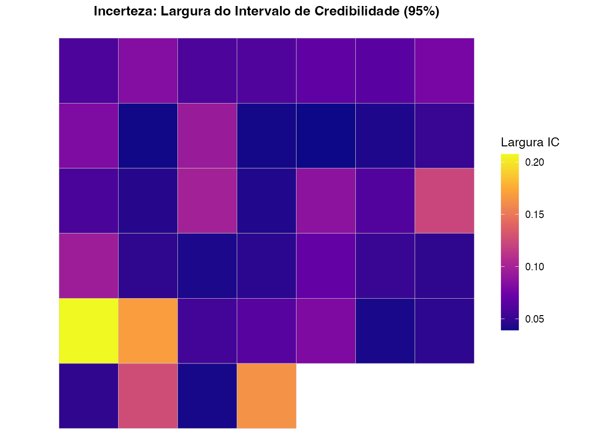
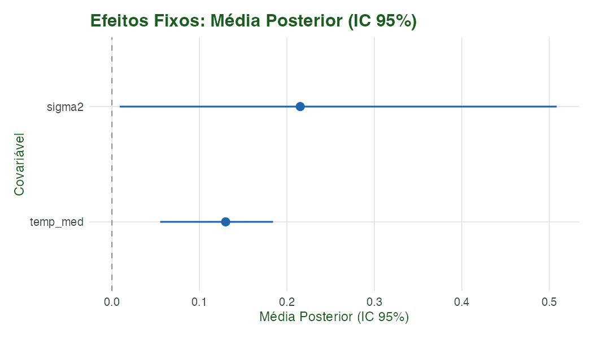
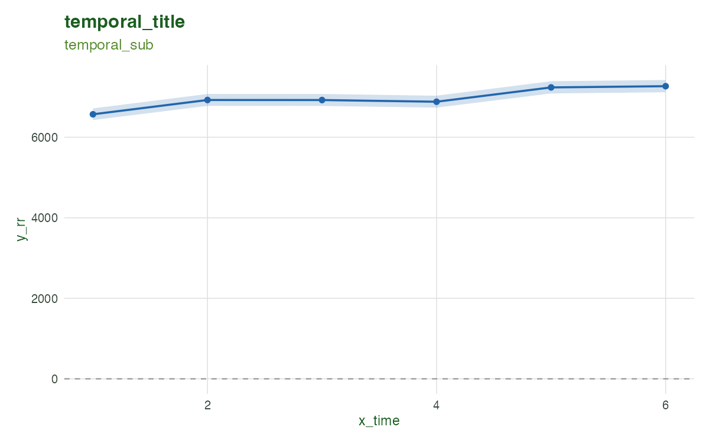
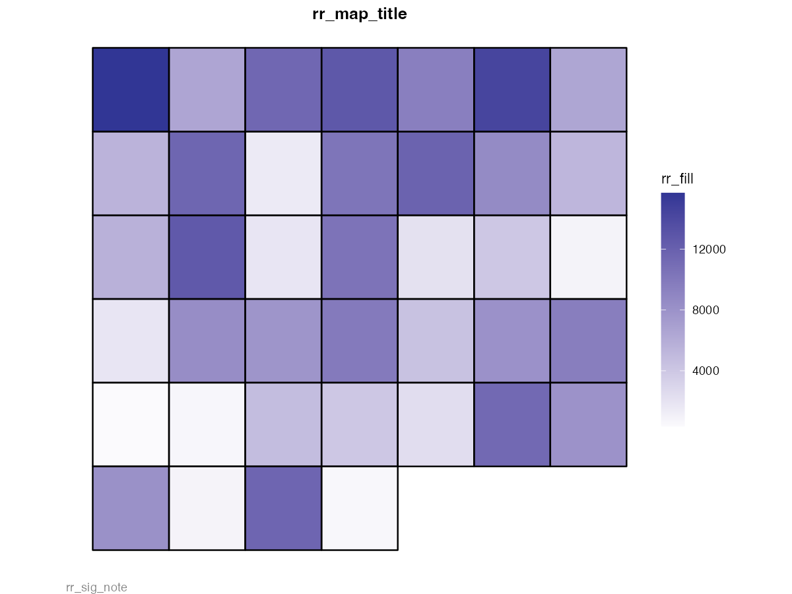
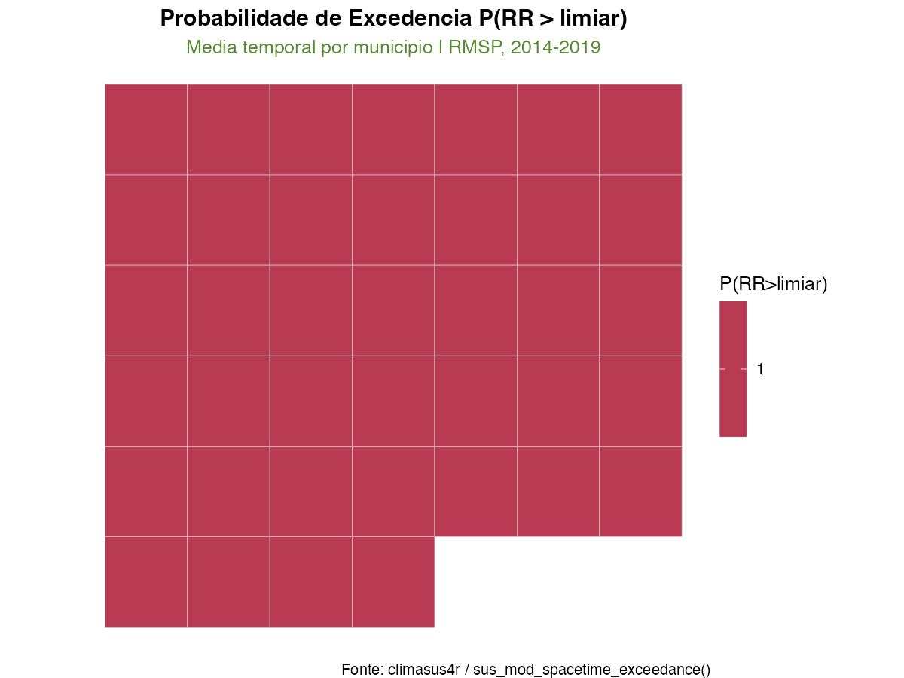
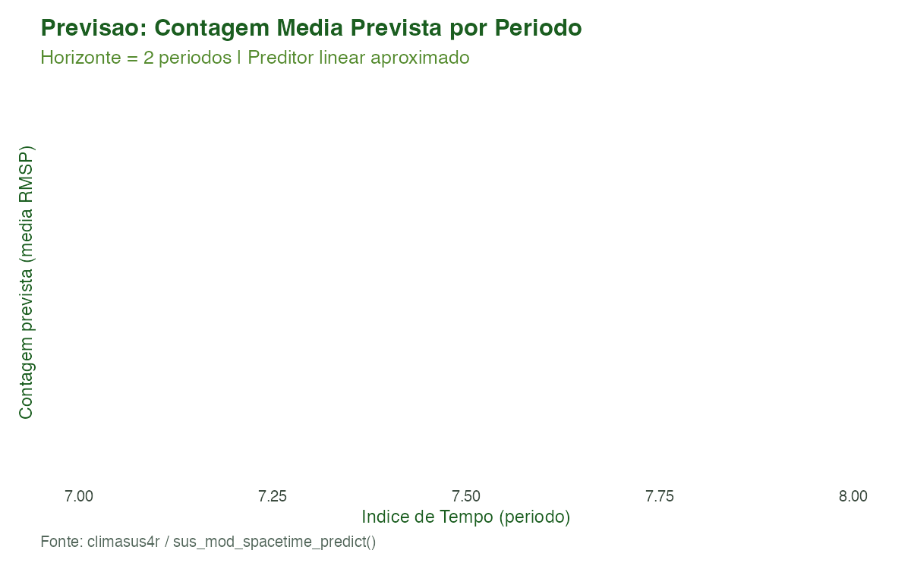

Modelagem 07: Modelos Bayesianos Espaciais e Espaço-Temporais
Equipe climasus4r
10/07/2026
Source:vignettes/mod-07-bayes.Rmd
mod-07-bayes.RmdObjetivo
Ao final deste tutorial você será capaz de:
- Ajustar um modelo BYM (Besag-York-Mollié)
cross-seccional com
sus_mod_spatial_bayes()para obter riscos relativos suavizados por município; - Visualizar o mapa de risco relativo, o mapa
de incerteza e o forest plot de efeitos fixos
com
sus_mod_plot_spatial_bayes(); - Construir e ajustar um modelo espaço-temporal
hierárquico (BYM2 + RW2 + interação tipo I de Knorr-Held) com
sus_mod_spacetime_bayes(); - Explorar a decomposição espaço-temporal — efeito espacial
estruturado, tendência temporal e interação — com
sus_mod_plot_spacetime(); - Calcular probabilidades de excedência
para diferentes limiares de risco com
sus_mod_spacetime_exceedance(); - Gerar previsões aproximadas para períodos futuros
via extrapolação do preditor linear com
sus_mod_spacetime_predict().
Este tutorial cobre a etapa de modelagem Bayesiana do pipeline climasus4r — que sucede os modelos espaciais clássicos (Tutorial 06) e antecede a análise de vulnerabilidade e SWOT (Tutorial 08).
Contexto científico
Por que modelos Bayesianos em epidemiologia espacial?
A epidemiologia de pequenas áreas — em que o desfecho é contado em municípios, setores censitários ou regiões administrativas — enfrenta três desafios estruturais que os modelos clássicos não resolvem adequadamente:
- Instabilidade de estimativas em áreas de pequena população: municípios com poucos habitantes apresentam taxas brutas extremamente variáveis, não porque o risco seja alto, mas por flutuação aleatória (Lawson, 2018).
- Dependência espacial: municípios vizinhos compartilham exposições ambientais, padrões socioeconômicos e acesso a serviços. Ignorar essa estrutura produz resíduos correlacionados e inferências equivocadas (Besag, York & Mollié, 1991).
- Dimensão temporal: em estudos multi-ano, o risco evolui no tempo de forma suave. Modelar essa evolução explicitamente produz estimativas mais precisas e permite detectar tendências e sazonalidades (Knorr-Held, 2000).
Os modelos Bayesianos hierárquicos resolvem o primeiro problema com suavização por empréstimo de força (borrowing strength): municípios de pequena população têm seu risco estimado a partir também da distribuição a priori e dos vizinhos. O segundo é abordado por efeitos aleatórios com estrutura CAR (Conditional Autoregressive). O terceiro, por processos de passeio aleatório no tempo.
O modelo BYM
O modelo de Besag, York e Mollié (1991) — BYM — decompõe o risco de cada área como:
onde:
- é o intercepto (nível médio de log-risco);
- é a contribuição dos efeitos fixos (covariáveis climáticas e ambientais);
- é o efeito aleatório espacialmente estruturado — segue uma distribuição CAR intrínseca (ICAR), que garante que áreas vizinhas tenham valores próximos;
- é o efeito aleatório não estruturado — captura heterogeneidade residual independente da posição geográfica.
A taxa esperada de desfecho na área é , onde são as contagens esperadas (offset).
O modelo BYM2 (Riebler et al., 2016)
O modelo BYM2 reparametriza o BYM original com um único parâmetro de precisão e um parâmetro de mistura :
onde é o componente ICAR escalonado e . O parâmetro quantifica a proporção de variância atribuível à estrutura espacial. Priores de complexidade penalizada (penalised complexity, PC) são usados: e .
O modelo espaço-temporal de Knorr-Held (2000)
Para dados de painel (área tempo), o preditor linear torna-se:
onde:
- é o efeito aleatório espacial (BYM2);
- é o efeito temporal estruturado (passeio aleatório de segunda ordem, RW2);
- é a interação espaço-tempo (tipo I: IID; tipo IV: estruturado em ambas as dimensões);
- são as contagens esperadas (offset).
Knorr-Held (2000) propõe quatro tipos de interação: IID (tipo I), estruturado no tempo (tipo II), estruturado no espaço (tipo III) e estruturado em ambas as dimensões (tipo IV).
Excedência Bayesiana
A probabilidade de excedência é a probabilidade posterior de que o risco relativo em uma área supere um limiar :
Esta é uma ferramenta fundamental para vigilância epidemiológica: em vez de reportar apenas o RR médio — que pode ser alto mas incerto — ela traduz a incerteza posterior em uma decisão probabilística. Quando amostras da posterior não estão diretamente disponíveis, a aproximação lognormal de Richardson et al. (2004) é usada:
onde é o desvio-padrão estimado do log-RR a partir do intervalo de credibilidade de 95% (Richardson et al., 2004).
Dados utilizados
| Objeto | Origem | Papel |
|---|---|---|
caso_espacial.rds |
Pipeline anterior (Tutorial 06) | SF de municípios da RMSP com code_muni,
n_obitos, pop, temp_med
|
mod_weights.rds |
Tutorial 06 | Objeto climasus_weights (pesos Queen da RMSP) |
caso_serie.rds |
Tutorial 05 (opcional) | Série diária de óbitos — agrupada por município × ano |
Caso condutor: temperatura e mortalidade respiratória em idosos (J00–J99) na RM de São Paulo, 2014–2019, 39 municípios.
Pipeline completo
Carregar pacote e dados
library(climasus4r)
# Carregar sf de municípios (caso_espacial.rds) e pesos (mod_weights.rds)
rmsp_sf <- readRDS("vignettes-pt/dados/caso_espacial.rds")
mod_weights <- readRDS("vignettes-pt/dados/mod_weights.rds")
# Dados tabulares sem geometria para sus_mod_spatial_bayes
df_cross <- sf::st_drop_geometry(rmsp_sf)Modelo BYM cross-seccional
fit_bym <- sus_mod_spatial_bayes(
df = df_cross,
outcome = "n_obitos", # coluna de contagens
W = mod_weights, # climasus_weights (Tutorial 06)
covariates = "temp_med", # temperatura média como covariável fixa
offset = "expected", # contagens esperadas (log-offset)
family = "poisson",
model = "bym", # BYM via CARBayes/MCMC
n_iter = 10000L,
burnin = 2000L,
thin = 10L,
prior_tau2 = c(1, 0.01), # prior IG(1, 0.01) para tau^2 (fracamente informativo)
seed = 42L,
lang = "pt"
)
print(fit_bym)Visualizações do modelo BYM
# Mapa de Risco Relativo suavizado
sus_mod_plot_spatial_bayes(
x = fit_bym,
municipalities = rmsp_sf,
type = "rr", # choropleth do RR posterior
lang = "pt"
)
# Mapa de incerteza (largura do IC95%)
sus_mod_plot_spatial_bayes(
x = fit_bym,
municipalities = rmsp_sf,
type = "uncertainty", # IC95% superior - IC95% inferior
lang = "pt"
)
# Forest plot de efeitos fixos
sus_mod_plot_spatial_bayes(
x = fit_bym,
type = "coef", # estimativas e IC95% dos betas
lang = "pt"
)
# Painel combinado RR + incerteza (requer patchwork)
sus_mod_plot_spatial_bayes(
x = fit_bym,
municipalities = rmsp_sf,
type = "both",
lang = "pt"
)Construir painel espaço-temporal (município × ano)
# Agregar série diária por código de município e ano
painel_st <- readRDS("vignettes-pt/dados/caso_serie.rds") |>
dplyr::mutate(ano = as.integer(format(as.Date(date), "%Y"))) |>
dplyr::group_by(code_muni, ano) |>
dplyr::summarise(
n_obitos = sum(n_obitos, na.rm = TRUE),
.groups = "drop"
) |>
dplyr::left_join(
sf::st_drop_geometry(rmsp_sf[, c("code_muni", "pop", "temp_med", "expected")]),
by = "code_muni"
)Modelo espaço-temporal BYM2 + RW2 (INLA)
# Requer o pacote INLA (não está no CRAN)
# install.packages("INLA",
# repos = c(INLA = "https://inla.r-inla-download.org/R/stable"))
fit_st <- sus_mod_spacetime_bayes(
df = painel_st,
outcome = "n_obitos",
W = mod_weights,
time_col = "ano", # coluna de tempo (inteiro ou Date)
time_unit = "year", # agregação anual
covariates = "temp_med", # efeito fixo: temperatura média
offset = "expected", # contagens esperadas (log-offset)
family = "poisson",
spatial_model = "bym2", # BYM2 com priores PC (Riebler et al. 2016)
temporal_model = "rw2", # passeio aleatório de 2ª ordem
interaction_type = "I", # interação IID (Knorr-Held tipo I)
pc_prior_u = 0.5, # P(sigma > 0.5) = 0.01
pc_prior_alpha = 0.01,
compute_waic = TRUE,
n_samples = 1000L,
seed = 42L,
lang = "pt"
)
print(fit_st)
# Salvar para reuso nos tutoriais seguintes
saveRDS(fit_st, "vignettes-pt/dados/mod_spacetime_fit.rds")Visualizações do modelo espaço-temporal
# Tendência temporal do RR (média sobre municípios)
sus_mod_plot_spacetime(
x = fit_st,
type = "temporal", # linha com RR médio + IC95% ao longo do tempo
lang = "pt"
)
# Mapa coroplético de RR (média temporal por município)
sus_mod_plot_spacetime(
x = fit_st,
type = "rr_map", # choropleth do RR médio espaço-temporal
municipalities = rmsp_sf,
lang = "pt"
)
# Heatmap de interação espaço-tempo (município × período)
sus_mod_plot_spacetime(
x = fit_st,
type = "interaction", # gamma_{it}: efeito diferencial por célula
lang = "pt"
)
# Forest plot de efeitos fixos (modelo espaço-temporal)
sus_mod_plot_spacetime(
x = fit_st,
type = "coef",
lang = "pt"
)Probabilidades de excedência
exc_resultado <- sus_mod_spacetime_exceedance(
fit = fit_st,
thresholds = c(1.0, 1.5, 2.0), # limiares de RR para P(RR > t)
lang = "pt",
verbose = TRUE
)
print(exc_resultado)
exc_resultado$n_exceed # contagem de células com P(RR > t) > 0.80
# Agregar excedências por ano (útil para vigilância)
exc_anual <- sus_mod_spacetime_exceedance(
fit = fit_st,
thresholds = c(1.0, 1.5, 2.0),
aggregate_time = "year", # média anual antes de calcular P(RR > t)
municipalities = rmsp_sf, # juntar geometria para mapeamento direto
lang = "pt"
)Previsão espaço-temporal aproximada
# Previsão para 2 períodos à frente (horizonte = 2 anos)
pred_futuro <- sus_mod_spacetime_predict(
fit = fit_st,
newdata = NULL, # NULL => constrói grid automático
horizon = 2L, # 2 períodos além do último observado
include_ci = TRUE, # IC95% via propagação de variância
lang = "pt"
)
print(pred_futuro)
head(pred_futuro$predictions)
# Cenário contrafactual: +2 °C de temperatura
pred_counter <- sus_mod_spacetime_predict(
fit = fit_st,
newdata = painel_st, # grade observada
covariates_new = list(temp_med = painel_st$temp_med + 2), # override
include_ci = TRUE,
lang = "pt"
)Características das funções
sus_mod_spatial_bayes() — Modelo Bayesiano Espacial
Cross-seccional
Ajusta um modelo Bayesiano hierárquico para mapeamento de doenças em municípios (ou outras unidades de área), usando priores CAR via CARBayes (MCMC) ou INLA (aproximação de Laplace aninhada).
Assinatura:
sus_mod_spatial_bayes(
df, outcome, W,
covariates = NULL,
offset = NULL,
family = c("poisson", "binomial", "gaussian"),
model = c("bym", "leroux", "independent", "bym2"),
n_iter = 10000L,
burnin = 2000L,
thin = 10L,
prior_tau2 = c(1, 0.01),
seed = 42L,
lang = "pt",
verbose = TRUE
)Parâmetro model:
| Valor | Engine | Descrição |
|---|---|---|
"bym" (padrão) |
CARBayes/MCMC | Besag-York-Mollié: ICAR + IID |
"leroux" |
CARBayes/MCMC | CAR com parâmetro de mistura |
"independent" |
CARBayes/MCMC | Efeitos aleatórios IID (sem estrutura espacial) |
"bym2" |
INLA (requer instalação separada) | BYM2 reparametrizado com priores PC |
Retorna: objeto de classe
climasus_spatial_bayes com slots: - $fixed:
efeitos fixos (média, DP, IC95% posterior) - $random:
efeitos aleatórios por município (phi_mean,
phi_sd) - $rr: risco relativo por município
(rr_mean, rr_lower95, rr_upper95)
- $fitted: valores ajustados (escala de resposta) -
$dic: DIC (ou vetor com DIC e WAIC para BYM2) -
$model, $family,
$n_iter_effective, $call
sus_mod_plot_spatial_bayes() — Visualizações do Modelo
Espacial Bayesiano
Produz mapas e gráficos a partir de um objeto
climasus_spatial_bayes.
Assinatura:
sus_mod_plot_spatial_bayes(
x,
municipalities = NULL,
type = c("rr", "uncertainty", "coef", "both"),
title = NULL,
base_size = 12,
lang = "pt",
...
)Parâmetro type:
| Valor | Descrição | Requer municipalities
|
|---|---|---|
"rr" (padrão) |
Choropleth do RR posterior médio; municípios com IC95% inteiramente acima de 1 recebem borda preta | Sim |
"uncertainty" |
Choropleth da largura do IC95% (plasma palette) | Sim |
"coef" |
Forest plot dos efeitos fixos com IC95% | Não |
"both" |
Painel RR + incerteza lado a lado (usa patchwork se
disponível) |
Sim |
Retorna: objeto ggplot (ou
patchwork para "both").
sus_mod_spacetime_bayes() — Modelo Bayesiano
Espaço-Temporal (INLA)
Ajusta um modelo hierárquico espaço-temporal completo usando INLA. Requer o pacote INLA (não está no CRAN; veja instruções de instalação abaixo).
Assinatura:
sus_mod_spacetime_bayes(
df,
outcome,
W,
time_col = "date",
time_unit = c("year", "month", "week", "auto"),
covariates = NULL,
offset = NULL,
family = c("poisson", "nbinomial", "binomial", "gaussian"),
spatial_model = c("bym2", "bym", "besag", "iid"),
temporal_model = c("rw1", "rw2", "ar1", "iid_time"),
interaction_type = c("none", "I", "II", "III", "IV"),
pc_prior_u = 0.5,
pc_prior_alpha = 0.01,
compute_waic = TRUE,
compute_cpo = FALSE,
exceedance_threshold = 1.0,
n_samples = 1000L,
seed = 42L,
lang = "pt",
verbose = TRUE
)Parâmetros principais:
| Parâmetro | Valores possíveis | Papel |
|---|---|---|
spatial_model |
"bym2" (padrão), "bym",
"besag", "iid"
|
Estrutura do efeito espacial |
temporal_model |
"rw1", "rw2" (padrão), "ar1",
"iid_time"
|
Estrutura do efeito temporal |
interaction_type |
"none", "I" a "IV"
|
Tipo de interação Knorr-Held (2000) |
time_unit |
"year", "month", "week",
"auto"
|
Granularidade temporal |
Retorna: objeto de classe
climasus_spacetime_bayes com slots: - $fixed:
efeitos fixos (mean, sd, lower95, upper95, mode) - $rr: RR
por célula (code_muni × time_idx) com p_exceed -
$spatial_re: efeito espacial por município
(phi_mean, phi_sd) -
$temporal_re: efeito temporal por período
(psi_mean, psi_sd) -
$interaction_re: interação por célula
(gamma_mean, gamma_sd) ou NULL -
$waic, $dic: critérios de ajuste -
$model_spec, $call, $n_areas,
$n_times
sus_mod_plot_spacetime() — Visualizações do Modelo
Espaço-Temporal
Produz cinco tipos de gráfico a partir de objetos
climasus_spacetime_bayes ou
climasus_spacetime_exceedance.
Assinatura:
sus_mod_plot_spacetime(
x,
type = c("rr_map", "temporal", "interaction", "exceedance", "coef"),
municipalities = NULL,
threshold = 1.0,
lang = "pt",
...
)Parâmetro type:
| Valor | Descrição | Requer municipalities
|
Requer climasus_spacetime_exceedance
|
|---|---|---|---|
"rr_map" |
Choropleth do RR médio (médio sobre períodos, ou por período via
time_idx) |
Sim | Não |
"temporal" |
Série temporal do RR médio sobre municípios + IC95% | Não | Não |
"interaction" |
Heatmap (município × período) | Não | Não |
"exceedance" |
Choropleth de | Sim | Sim (climasus_spacetime_exceedance) |
"coef" |
Forest plot dos efeitos fixos | Não | Não |
sus_mod_spacetime_exceedance() — Probabilidades de
Excedência
Calcula para cada célula município × período.
Assinatura:
sus_mod_spacetime_exceedance(
fit,
thresholds = c(1.0, 1.5, 2.0),
aggregate_time = NULL,
municipalities = NULL,
lang = "pt",
verbose = TRUE
)Parâmetros principais:
| Parâmetro | Papel |
|---|---|
thresholds |
Vetor de limiares
para
;
gera colunas p_gt_1_0, p_gt_1_5, etc. |
aggregate_time |
"year" ou "month" para agregar
temporalmente antes do cálculo; NULL = sem agregação |
municipalities |
Objeto sf para junção espacial direta do resultado |
Retorna: objeto de classe
climasus_spacetime_exceedance com: -
$exceedance: data.frame com code_muni,
time_idx (ou time_period),
rr_mean, colunas p_gt_* -
$thresholds: vetor de limiares usados -
$n_exceed: data.frame com contagem de células onde
sus_mod_spacetime_predict() — Previsão Espaço-Temporal
Aproximada
Gera previsões aproximadas via preditor linear para períodos futuros ou cenários contrafactuais.
Assinatura:
sus_mod_spacetime_predict(
fit,
newdata = NULL,
horizon = 0L,
covariates_new = NULL,
include_ci = TRUE,
return_samples = FALSE,
lang = "pt",
verbose = TRUE
)Parâmetros principais:
| Parâmetro | Papel |
|---|---|
horizon |
Períodos à frente quando newdata = NULL; extrapolação
via RW1/RW2 |
newdata |
Data.frame com code_muni + time_idx +
covariáveis para previsão in-sample ou cenário contrafactual |
covariates_new |
Lista nomeada de overrides de covariáveis
(e.g. list(temp_med = temp + 2)) para análise de
cenário |
include_ci |
Se TRUE, calcula IC95% via propagação de variância das
posteriores |
Retorna: objeto de classe
climasus_spacetime_pred com: - $predictions:
data.frame com code_muni, time_idx,
pred_mean, pred_lower95,
pred_upper95 - $n_predicted,
$horizon, $call
Nota importante: esta função usa um preditor linear aproximado. Para distribuições preditivas posteriores exatas, reajuste
sus_mod_spacetime_bayes()com o conjunto de dados completo incluindo os períodos futuros.
Resultados ilustrados
Figura 1 — Mapa de Risco Relativo BYM (cross-seccional)

Figura 1. Mapa coroplético do risco relativo suavizado pelo modelo BYM (Besag-York-Mollié). Escala divergente centrada em RR = 1.0 (azul marinho = risco abaixo da média; vermelho = acima). Municípios com IC95% inteiramente acima de 1 apresentam borda preta (risco significativamente elevado). Fonte: climasus4r / sus_mod_spatial_bayes().
Figura 2 — Incerteza Posterior (largura do IC95%)

Figura 2. Mapa de incerteza: largura do intervalo de credibilidade de 95% para o risco relativo por município. Municípios com alta incerteza (paleta plasma escura) geralmente apresentam população pequena ou dados esparsos. Fonte: climasus4r / sus_mod_plot_spatial_bayes(type=‘uncertainty’).
Figura 3 — Forest Plot de Coeficientes Fixos (BYM)

Figura 3. Forest plot dos efeitos fixos do modelo BYM: média posterior (ponto) e intervalo de credibilidade de 95% (linha horizontal). A linha tracejada vertical em zero é a referência de ausência de efeito. Fonte: climasus4r / sus_mod_plot_spatial_bayes(type=‘coef’).
| term | mean | sd | lower95 | upper95 |
|---|---|---|---|---|
| temp_med | 0.1300 | NA | 0.0552 | 0.1842 |
| sigma2 | 0.2153 | NA | 0.0089 | 0.5085 |
Figura 4 — Tendência Temporal do RR (Modelo Espaço-Temporal)

Figura 4. Tendência temporal do risco relativo médio (sobre todos os municípios da RMSP), com intervalo de credibilidade de 95%. O efeito temporal é estimado por um passeio aleatório de segunda ordem (RW2), capturando aceleração e desaceleração suaves da tendência. Fonte: climasus4r / sus_mod_plot_spacetime(type=‘temporal’).
Figura 5 — Mapa de RR Espaço-Temporal (Média do Período)

Figura 5. Mapa coroplético do risco relativo médio sobre todo o período de estudo (2014-2019), estimado pelo modelo espaço-temporal BYM2 + RW2. A suavização bayesiana é dupla: espacial (BYM2) e temporal (RW2). Fonte: climasus4r / sus_mod_plot_spacetime(type=‘rr_map’).
Figura 6 — Probabilidade de Excedência

Figura 6. Mapa da probabilidade posterior de excedência P(RR > 1,5), média temporal por município. Valores próximos de 1 indicam alta certeza de risco acima de 50% do esperado. A aproximação lognormal é usada quando apenas a média e o IC95% posterior estão disponíveis (Richardson et al., 2004). Fonte: climasus4r / sus_mod_spacetime_exceedance().
| threshold | n_cells_exceed |
|---|---|
| 1.0 | 234 |
| 1.5 | 234 |
| 2.0 | 234 |
Figura 7 — Previsão Aproximada (Horizonte = 2 Períodos)

Figura 7. Previsão da contagem média de óbitos respiratórios para os dois períodos seguintes ao período de estudo, usando sus_mod_spacetime_predict(horizon = 2). Pontos laranja: períodos previstos; faixa verde: IC95% por propagação de variância. Aviso: preditor linear aproximado — para distribuições preditivas exatas, reajuste o modelo com os dados completos. Fonte: climasus4r / sus_mod_spacetime_predict().
Notas de implementação e boas práticas
Instalação do INLA
O pacote INLA não está no CRAN. Para instalá-lo:
install.packages(
"INLA",
repos = c(INLA = "https://inla.r-inla-download.org/R/stable",
getOption("repos"))
)Proteger chamadas a pacotes Suggests
Qualquer chamada ao INLA, CARBayes, spdep ou sf deve ser protegida:
if (!requireNamespace("INLA", quietly = TRUE)) {
stop("INLA necessário: instale com install.packages('INLA', ...)")
}Escolha do modelo espacial
| Situação | Modelo recomendado |
|---|---|
| Análise exploratória rápida, sem INLA |
model = "bym" (CARBayes) |
| Priores bem calibrados, escalabilidade |
model = "bym2" (INLA) |
| Suspeita de dependência fraca | model = "leroux" |
| Apenas heterogeneidade não estruturada | model = "independent" |
Escolha do modelo temporal
| Situação | Modelo recomendado |
|---|---|
| Tendência suave (recomendado para saúde) | temporal_model = "rw2" |
| Tendência mais local, ano a ano | temporal_model = "rw1" |
| Autocorrelação de curto prazo | temporal_model = "ar1" |
Referências
Anselin, L. (1988). Spatial Econometrics: Methods and Models. Kluwer Academic Publishers.
Besag, J., York, J., & Mollié, A. (1991). Bayesian image restoration, with two applications in spatial statistics. Annals of the Institute of Statistical Mathematics, 43(1), 1–20.
Blangiardo, M., & Cameletti, M. (2015). Spatial and Spatio-temporal Bayesian Models with R-INLA. Wiley.
Gelman, A., Carlin, J. B., Stern, H. S., Dunson, D. B., Vehtari, A., & Rubin, D. B. (2013). Bayesian Data Analysis (3rd ed.). CRC Press.
Held, L., & Schrödle, B. (2010). Posterior and cross-validatory predictive checks: a comparison of MCMC and INLA. In Statistical Modelling and Regression Structures (pp. 91–110). Physica-Verlag.
Knorr-Held, L. (2000). Bayesian modelling of inseparable space-time variation in disease risk. Statistics in Medicine, 19(17–18), 2555–2567.
Lawson, A. B. (2018). Bayesian Disease Mapping: Hierarchical Modeling in Spatial Epidemiology (3rd ed.). CRC Press.
Lee, D. (2013). CARBayes: an R package for Bayesian spatial modelling with conditional autoregressive priors. Journal of Statistical Software, 55(13), 1–24.
Leroux, B. G., Lei, X., & Breslow, N. (2000). Estimation of disease rates in small areas: a new mixed model for spatial dependence. In Statistical Models in Epidemiology, the Environment, and Clinical Trials (pp. 179–191). Springer.
Richardson, S., Thomson, A., Best, N., & Elliott, P. (2004). Interpreting posterior relative risk estimates in disease-mapping studies. Environmental Health Perspectives, 112(9), 1016–1025.
Riebler, A., Sørbye, S. H., Simpson, D., & Rue, H. (2016). An intuitive Bayesian spatial model for disease mapping that accounts for scaling. Statistical Methods in Medical Research, 25(4), 1145–1165.
Rue, H., Martino, S., & Chopin, N. (2009). Approximate Bayesian inference for latent Gaussian models by using integrated nested Laplace approximations. Journal of the Royal Statistical Society: Series B, 71(2), 319–392.
Navegação
| Anterior | Esta página | Próxima |
|---|---|---|
| Modelos Espaciais | Modelos Bayesianos | Vulnerabilidade e SWOT |